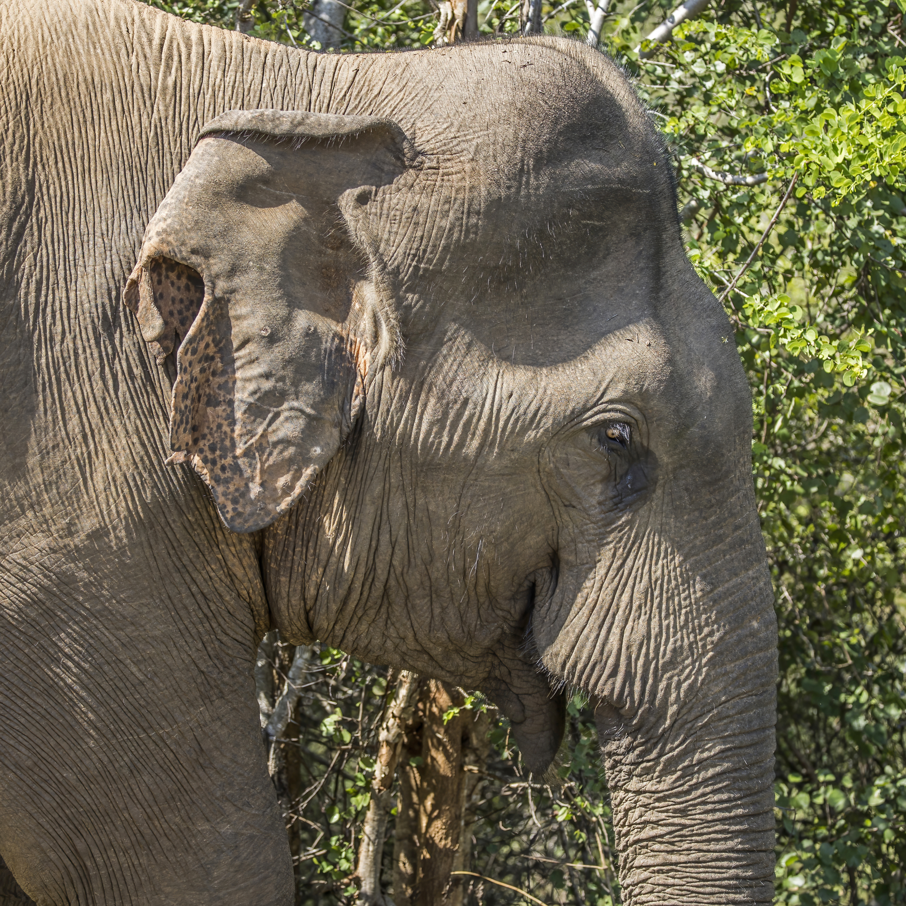
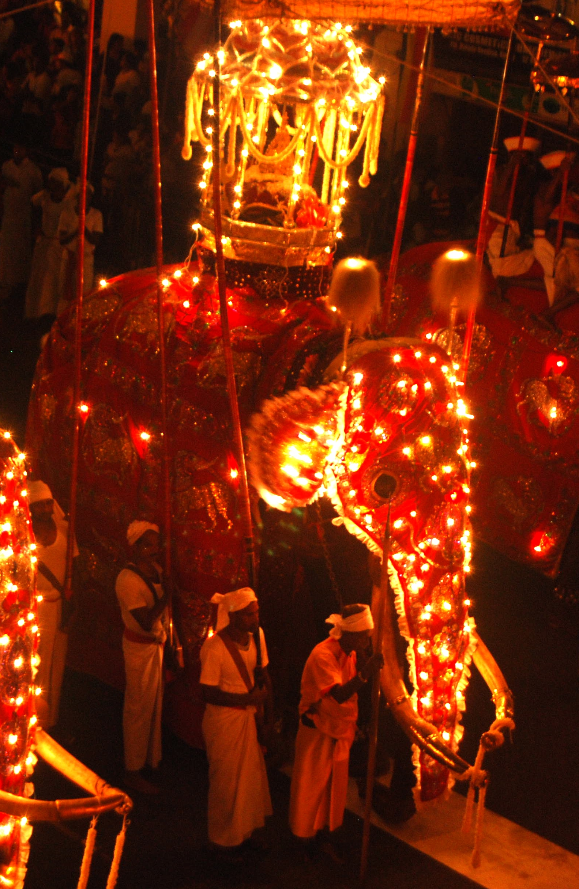

Meet the Giants
of Ceylon
Anatomy, evolutionary adaptations, genetics, and the remarkable ecological keystone biology of the native Sri Lankan elephant subspecies—the largest and darkest phenotyped population across the Asian continent.
Linnaean Classification Hierarchy
Established by Carl Linnaeus in 1758 based on descriptions from Ceylon. As the type subspecies of the Asian elephant, it anchors the genus.
Insular Genetic Divergence & Endemism
Mitochondrial DNA analyses confirm that the Sri Lankan subspecies retains monophyletic mitochondrial clades distinct from mainland Indian (E. m. indicus) and Sumatran (E. m. sumatranus) populations, originating from periodic sea-level isolations across the Palk Strait during the Pleistocene epoch.
Physiological Adaptations for Survival
Select anatomical hotspots to reveal intricate structural blueprints, neuromuscular architecture, and biomechanical capabilities refined through millions of years.

Trunk & Proboscis
The proboscis is an evolutionary fusion of the upper lip and nose, containing over 40,000 distinct fascicles of muscle without any bone. It functions simultaneously as an ultra-sensitive olfactory organ capable of detecting water miles away, a delicate manipulative finger for pluckable vegetation, a trumpet for acoustic infrasonic resonance, and a siphon capable of retaining 8.5 liters of liquid.
The Depigmentation Phenomenon
Sri Lankan elephants (Elephas maximus maximus) exhibit the most pronounced and widespread cutaneous depigmentation of any living proboscidean. Known locally as Kaha Kabara, these distinct mosaic pink and dark-freckled patches manifest along the ears, forehead, cheeks, and down the trunk.
Far from a pathological disorder, this progressive vitiligo-like loss of melanocyte synthesis is genetically mediated and age-correlated. Young calves are born uniformly slate gray; as individuals mature through their twenties and thirties, melanin production is repressed in localized epidermal pockets, creating individualized freckling patterns that researchers use for non-invasive photo-identification.
The Tusk Paradox
One of the greatest biological mysteries of Sri Lanka's wildlife is the extraordinary scarcity of tuskers (Aththa). While more than 90% of male Asian elephants in southern India carry prominent ivory tusks, less than 5-7% of wild Sri Lankan bulls possess them.
Tusks vs. Tushes
Tuskless males are termed Maknas. Instead of heavy elongated incisors, both maknas and adult females typically carry tushes—rudimentary, brittle second upper incisors rarely exceeding 15 cm in length that frequently snap during bark-stripping activities without nerve pain.
Colonial Selection Pressure: Heavy trophy-shooting during the 19th-century British colonial era selectively culled almost all tusked bull genomes, permanently skewing the island's reproductive gene pool toward the tuskless makna phenotype.

Ecological Keystone Mechanics
Elephants are ecosystem engineers whose everyday foraging, defecation, and migratory behavior dictate the biological viability of hundreds of sympatric plant and animal species across the island.
Long-Distance Seed Dispersal
Consuming massive quantities of wild fruit (including Dillenia indica and Limonia acidissima), elephants carry seeds up to 35+ km before expelling them in rich manure piles that protect nascent seedlings from predatory insects.
Dry-Season Well Excavation
During severe dry spells, elephants use their feet and trunks to dig into dry sandy riverbeds (such as the Malwathu Oya and Menik Ganga) to reach subterranean aquifers, creating vital open watering holes that sustain spotted deer, leopards, and birds.
Canopy Gap Creation
By uprooting trees and toppling overgrown thorny thickets, elephants carve out solar avenues down to the jungle floor. This allows solar radiation to invigorate secondary herbaceous succession, providing graze for chital, sambar deer, and wild boar.
Scientific Literature & Field Studies
Current Status of Asian Elephants in Sri Lanka: Range, Population, and Conflict Patterns
Pioneering nation-wide island census using point-sampling and fecal-DNA markers, definitively revealing that over 70% of wild elephant distribution lies outside protected areas.
The Living Elephants: Evolutionary Ecology, Behavior, and Conservation
Comprehensive treatise detailing the phylogenetic divergence of Elephas maximus maximus, dental morphology evolution, and dietary adaptations in tropical scrub monsoon forests.
Fission-Fusion Dynamics and Long-Term Demographic Stability in Uda Walawe
Multi-year non-invasive longitudinal study uncovering the flexible multi-tiered matrilineal network of Sri Lankan herds in reaction to localized seasonal rainfall and resource patches.